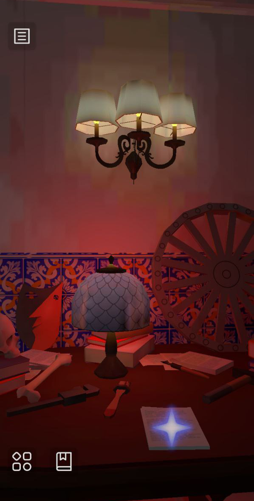

LO-FI ART
Or How Medium Limitations Inform the Aesthetics of Games
Casilda de Zulueta | gatdesoia.es/
IndieDevDay | 27th-29th September 2024
🎨🏛️✨💜
WHAT'S THIS TALK ABOUT?
- How did 3D graphics work in the past?
- How can we recreate them?
- How can we break the rules when we emulate them in our own games?
- A historical, technological and artistic journey of this fragment of our medium and its rediscovery in amateur development.
WAIT, AMATEUR? 💗
- Making something for the sake of it, for the love of it.
- It can be economically successful,
- and made by excellent, highly-skilled professionals,
- but product viability is not a requirement.
WHAT ISN'T IT ABOUT?
- Who did it first,
- math,
- every single game that could be tagged as 3D lo-fi,
- every single game that had 3D graphics between late '90s and early '00s.
WHO AM I?
- Casilda de Zulueta (Casi).
- My source of income:
- Entwicklerin für 3D Visualisierung @ Staatsbibliothek zu Berlin 📚🏛️
- Technical Artist & Animator (Freelancer) ✨🎮
- Indie developer:
- Coorganizer of the #FemDevsMeetup 💚
- ≠FemDevs 💜

WHAT'S MY (CAREER) STORY?

This kid is going places, I'm telling you.
- Audiovisual Communication B.Soc.Sc. 📼
- Escola Politècnica Superior de Gandia. Universitat Politècnica de València.
- Game Development & Research M.A. 👾
- Cologne Game Lab. Technische Hochschule Köln.
- Student Freelancer Animator 🐜
- It doesn't pay or pays real bad.
- Fulltime Job (3D Generalist) 🐑
- The pay raise is considerable, still started with minimum wage.
- Back to Freelance 🦄
- First as a 3D Artist,
- then as a specialist.
- Raising yearly +50 EUR dayrate.
🌹🌹🌹🌹🌹🌹🌹🌹🌹🌹🌹🌹🌹
https://gatdesoia.itch.io/13-rosas


TIMELINE(S) ⌛
- 1995-2006
- GEN #5:
- PlayStation
- Nintendo 64
- Sega Saturn
- GEN #6:
- Dreamcast
- PS2
- XBox
- GameCube
- PC
- Arcades
- GEN #5:
- ~2018-???
- Steam
- Itch.io
- GOG
- +GEN 8# consoles
- Mobile ports/mobile-first

Tomb Raider 2 (1997).
FIFTH-GENERATION GRAPHICS ✨
RESOLUTIONS 🖼️
- Usual screen resolution: 256 x 224 px (4:3 aspect ratio).
- Max. screen resolution: 640 x 480 px.
- Could be dynamically changed.
- Max. screen resolution: 640 x 480 px.

TEXTURES 🏁
- Common max. texture size: 128 x 128 px.
- Max. cap: 256 x 256 px.
- N64: usual 32 x 32 px / max. 64 x 64 px.

Metal Gear Solid (1998).

Super Mario 64 (1996).
POLYGONS 🧊
- Max. polycount (on screen): 3000 tris.
- Skinned meshes: 300-800 tris.
- Infers max. render distance.

Spyro the Dragon (1998).
DISPLAY 📺
- CRT screens:
- PAL & SECAM (25 fps / 50 fields per second).
- NTSC (29,97 fps / 60 fields per second).
- Composite video (analogue):
- HLS.
- Color bleeding won't be as strong as in previous generations, but extra colors can be simulated through dithering and they will blend.
- Some machines have antialiasing filter (N64), some don't (PS1).


Silent Hill (1999).
COLOR 🎨
- 24-bit depth true color max.
- The bigger the texture, the lower the bit depth.
- PS1: hardware dithering (downscaling rendering bit depth to 15).
- Transparency.
SHADING 🦔
- Gouraud (vertex-shading).
- No normal maps. No PBR textures.
- Shadow blobs.
- Environment reflections/highlights can be achieved with a second texture (rendering each triangle twice).
- Mirrors are mesh duplicates (it's all smoke and idem).

From L to R: flat, Gouraud (per-vertex) and Phong (per-pixel) shading methods.
PS1 DISTORTIONS 🍥
- Warped textures due to affine projection.
- No mip-maps in hardware (texture "LODs").
- Wobbly meshes due to no floats (values with decimals):
- Vertices snap to nearest integer.
- No depth buffer:
- A triangle renders fully either in front or behind another trinagle.

Tomb Raider 2 (1997).
ALIASING ✏️
- "Pixelated" 3D look (not a thing in N64).
- It's not that noticeable if you see it through the target display of the time (CRT)...
- ... but definitely present on an LED display with higher resolution.
FAKING THE 3D 🧊
- Backgrounds.
- Character and pickup sprites.

Resident Evil (1996).
SIXTH-GENERATION GRAPHICS 💿
RESOLUTIONS 🖼️
- Stay in the same range as the previous generation.
TEXTURES 🏁
- Common max. texture size: 128 x 128 px.
- Max. cap: 512 x 512 px (doubles the previous gen.).
POLYGONS 🧊
- Max. polycount (on screen): 10,000 tris (cap around the 100,000 tris).
- Skinned meshes: 1,500-10,000 tris.
- Max. render distance can be pushed.

Silent Hill 3 (2003).
DISPLAY 📺
- CRT screens remain the same.
- Claims of Full HD (1080i) are upscales.
- We start to have LED TVs at home.
COLOR 🎨
- Same bit depth properties as before.
- More flexibility.
SHADING 🦔
- Still Gouraud, but now you have more polygons so shading is more precise.
- Same reflection and shadow tricks.

Kingdom Hearts (2002).
PREVIOUS DISTORTIONS ARE GONE 🍥
- Perspective projection is ubiquous.
- Mip-maps are a thing.
- No wobbly meshes anymore.
- Yes depth buffer.
ALIASING ✏️
- Still a thing in PS2 and many games on the other consoles (giving up anti-aliasing filters for performance).
3D WORLDS ARE TRULLY 3D (MOST OF THE TIME) 🧊
- Still using billboarded sprites for pickup drops and other small assets.
3D LO-FI GRAPHICS
GENERAL CONSIDERATIONS ☀️
- Render in small resolution, then upscale with no interpolation (nearest neighbor).
- Change the lighting model to per-vertex (Gouraud).
- Constrain max. polycount and max. texture size.
- Optionally, add CRT-like post-processing filters.
- If you want the PS1 artifacts, you will have to program them in.
APPRECIATION MOMENT

Paratopic (2018).

Crow Country (2024).

Alisa (2021).

Inunaki Tunnel (2019).

Chasing Static (2021).

Haunted Cities Vol. 3 (2018).

It's Winter (2019).

Szrot (tba).
THE END
🌹🌹🌹🌹🌹🌹🌹🌹🌹🌹🌹🌹🌹
Play the demo! https://gatdesoia.itch.io/13-rosas
CASILDA DE ZULUETA
@GatdeSoia 🦠/ 🦋 / 💼
#FemDevsMeetup 💚🎮